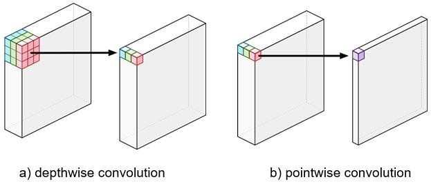

Convolutional neural networks (CNNs) are a fundamental type of neural network used in CV designed for image and video processing tasks. The core components of a CNN are convolutional layers, pooling layers and fully connected (FC) layers.
Great lecture videos about CNNs and Computer Vision in general: CS231n Winter 2016: Lecture 7: Convolutional Neural Networks CS231n Winter 2016: Lecture 8: Localization and Detection
A convolution operation applies a small matrix called a kernel (or filter) to an input image (or feature map), producing an output image. The kernel slides over the image, and at each position, it multiplies the kernel values with the overlapping image values, creating an output that shows how the kernel "reacts" to different patterns in the image, such as edges or shapes. The size of the kernel, how far it moves at each step (stride), and whether it adds extra pixels around the edges (padding) control how the convolution is applied.

The receptive field of a convolutional layer is the area of the input that affects a particular output feature. It is determined by the kernel size, stride, and padding. A larger receptive field allows the network to capture more contextual information. The receptive field of a convolutional layer can be calculated as:
A residual connection is a connection that skips one or more layers, allowing the network to learn residual functions (each layer adds something to the input rather than transforming it entirely). This is particularly useful in deep networks, where the gradient may vanish (the learning signal is too small to change the parameters of the model) or explode (the signal is so strong that values go beyond the numerical range and become NaN or inf). This "highway for gradients" enabled building deep networks made of many (even hundreds of) layers. The residual connection is typically implemented as:
- Dilated Convolution: Increases the receptive field by inserting zeros between kernel elements. - Transposed Convolution (Upsampling): Reverses the downsampling operation, often used for spatial upsampling. - Grouped Convolution: Divides the input channels into groups and applies convolution separately to each group. - Depthwise Convolution: A special case of grouped convolution where groups == in_channels, each filter has its own channel. - Pointwise Convolution (1x1 Conv): Applies convolution to the channel dimension, reducing the number of channels. 
The purpose of a pooling layer is to reduce the spatial dimension of the feature map, thus reducing the number of parameters and computational requirements. This is achieved by applying a downsampling operation, such as max pooling or mean pooling, to the feature map.